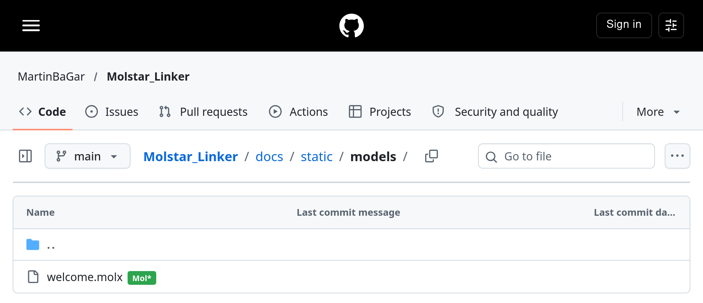

Opening a Structure
Opening a structure
Spot a molecular structure file (e.g., .pdb, .cif) on a supported site. A green Mol* badge appears next to the file link or download button.

- Click the badge.
- The file opens instantly in the Mol* web viewer in a new tab.
The badge appears automatically—no configuration required. If it doesn’t appear, check the FAQ for troubleshooting steps.